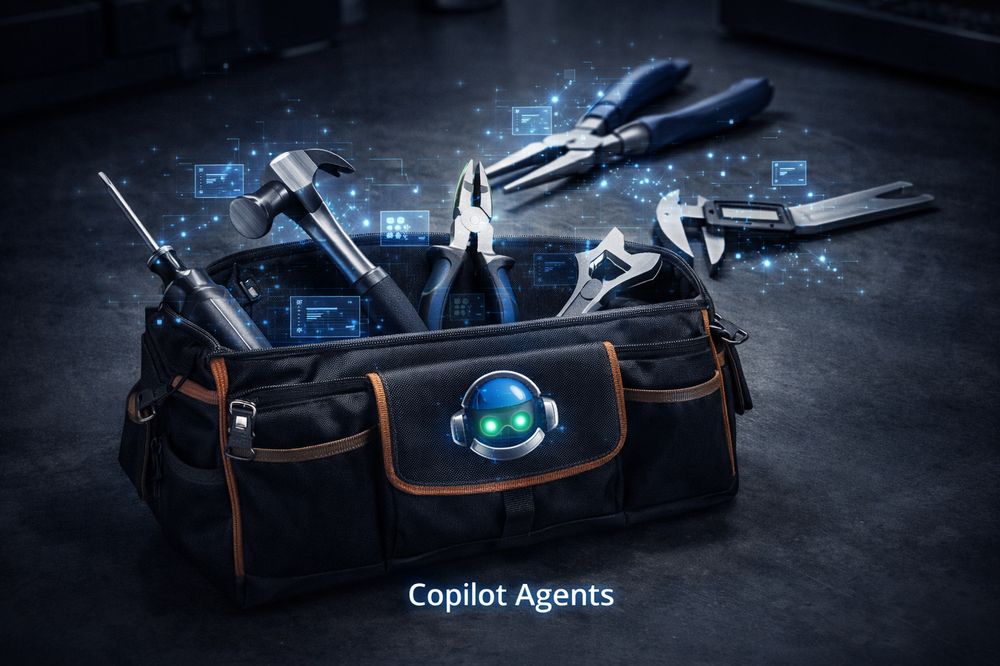

![CORTEX: The Engineering Operating System for Governed AI. Left panel shows the AI Velocity Paradox — 23–42% of engineering effort is spent on rework due to failures, fragmented institutional memory, and speed without guardrails. Right panel shows the Three Pillars of Governed Execution: Pillar 1 — Understand Everything (LENS pipeline analyses code structure, patterns, and dependencies in real-time); Pillar 2 — Empower Everyone (350+ specialised reasoning engines orchestrating expert delivery); Pillar 3 — Build Fearlessly (detect → fix → rescan loop iterates until zero critical violations remain).](assets/images/generated/shared/03-cortex-overview-infographic.png)
GitHub Copilot
GitHub Copilot delivers multi-model AI engineering directly in VS Code — inline suggestions, multi-file edits, agent mode for autonomous task execution, and 300+ built-in tools spanning web search, terminal, test runners, and file operations.
Copilot's agent architecture puts Claude, GPT-4o, Gemini, and o3 at your fingertips — with custom instructions per repository, MCP server integration, and a growing ecosystem of specialist agents and skills.
"We shape our tools and thereafter our tools shape us."
— Marshall McLuhan, Understanding Media

GitHub Copilot · Agent Architecture